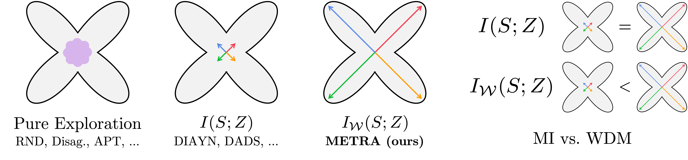

METRA: Scalable Unsupervised RL with Metric-Aware Abstraction
ICLR 2024
-
Seohong Park
UC Berkeley -
Oleh Rybkin
UC Berkeley -
Sergey Levine
UC Berkeley
Abstract
Unsupervised pre-training strategies have proven to be highly effective in natural language processing and computer vision. Likewise, unsupervised reinforcement learning (RL) holds the promise of discovering a variety of potentially useful behaviors that can accelerate the learning of a wide array of downstream tasks. Previous unsupervised RL approaches have mainly focused on pure exploration and mutual information skill learning. However, despite the previous attempts, making unsupervised RL truly scalable still remains a major open challenge: pure exploration approaches might struggle in complex environments with large state spaces, where covering every possible transition is infeasible, and mutual information skill learning approaches might completely fail to explore the environment due to the lack of incentives. To make unsupervised RL scalable to complex, high-dimensional environments, we propose a novel unsupervised RL objective, which we call Metric-Aware Abstraction (METRA). Our main idea is, instead of directly covering the state space, to only cover a compact latent space \(\mathcal{Z}\) that is metrically connected to the state space \(\mathcal{S}\) by temporal distances. By learning to move in every direction in the latent space, METRA obtains a tractable set of diverse behaviors that approximately cover the state space, being scalable to high-dimensional environments. Through our experiments in five locomotion and manipulation environments, we demonstrate that METRA can discover a variety of useful behaviors even in complex, pixel-based environments, being the first unsupervised RL method that discovers diverse locomotion behaviors in pixel-based Quadruped and Humanoid.
Why might previous unsupervised RL methods fail to scale?

- Prior work in unsupervised RL can be categorized into two main groups: (1) pure exploration methods and (2) unsupervised skill discovery methods.
- Pure exploration methods aim to cover the entire state space or fully capture the environment dynamics. However, in complex environments with a large state space, it is often infeasible to attain either of these aims. In fact, we show that these methods fail to cover the state space even in the state-based 29-dimensional MuJoCo Ant environment.
- Unsupervised skill discovery methods aim to discover diverse, distinguishable behaviors, e.g., by maximizing the mutual information (MI) between states and skills, \(I(S; Z)\). While such MI-based skill learning methods do learn behaviors that are mutually different, they do not necessarily encourage exploration and thus have limited state coverage.
METRA: A scalable objective for unsupervised RL
Desiderata
- Our main idea for scalable unsupervised RL is, instead of covering every possible state in the MDP, which is infeasible in complex environments, to learn a small set of behaviors that collectively cover as much of the state space as possible.
Objective
- To achieve this, we propose the following novel objective for unsupervised RL:
$$\begin{aligned} I_\mathcal{W}(S; Z) = \mathcal{W}(p(s, z), p(s)p(z)), \end{aligned}$$
$$\begin{aligned} I_\mathcal{W}(S; Z) = \mathcal{W}(p(s, z), p(s)p(z)), \end{aligned}$$- where \(I_\mathcal{W}(S; Z)\) is the Wasserstein dependency measure (WDM) between states and skills, and \(\mathcal{W}\) is the 1-Wasserstein distance with the temporal distance metric.
- Intuitively, \(I_\mathcal{W}(S; Z)\) can be viewed as a "Wasserstein variant" of the previous MI objective \(I(S; Z)\), where the KL divergence in MI is replaced with the Wasserstein distance. However, despite the apparent similarity, there exists a significant difference between the two objectives: MI is completely agnostic to the underlying distance metric, while WDM is a metric-aware quantity.
- As a result, the WDM objective not only discovers diverse skills that are different from one another, as in the MI objective, but also actively maximizes temporal distances between different skill trajectories. This makes them collectively cover the state space as much as possible.
Tractable optimization
- Unfortunately, the WDM objective above is intractable. However, we show that it is equivalent to the following simple, tractable objective under some approximations:
$$\begin{aligned} \text{Maximize} \ \ r = (\phi(s') - \phi(s))^\top z \quad \text{s.t.} \ \ \|\phi(s) - \phi(s')\|_2 \leq 1. \end{aligned}$$
$$\begin{aligned} \text{Maximize} \ \ &r = (\phi(s') - \phi(s))^\top z \quad \\ \text{s.t.} \ \ &\|\phi(s) - \phi(s')\|_2 \leq 1. \end{aligned}$$- We jointly train both a policy \(\pi(a|s, z)\) and a representation function \(\phi(s)\) with the same objective above using dual gradient descent.
Intuition

- Our final objective above has an intuitive interpretation. Intuitively, to maximize the reward, the policy should learn to move as far as possible along various directions (specified by \(z\)) in the latent space.
- Since distances in the latent space, \(\|\phi(s_1) - \phi(s_2)\|_2\), are always upper-bounded by the corresponding temporal distances in the MDP, the latent space should assign its (limited) dimensions to the most "temporally spread-out" manifolds in the state space, in the sense that shortest paths within the set of represented states should be as long as possible.
- This conceptually resembles "principal components" of the state space, but with respect to shortest paths rather than Euclidean distances, and with non-linear \(\phi\) rather than linear \(\phi\). In other words, \(\phi\) learns to abstract the state space in a lossy manner, while preserving the most temporally important manifolds.
- Based on this intuition, we call our method Metric-Aware Abstraction (METRA).
How good is METRA?

- To the best of our knowledge, METRA is the first unsupervised RL method that can discover diverse locomotion behaviors in pixel-based Quadruped and Humanoid, without any prior knowledge, supervision, or data.
Results (Pixel-based Quadruped)


- We use gradient-colored floors to allow the agent to infer its location from pixel observations.
Unsupervised skill discovery methods


- METRA discovers a variety of locomotion skills by maximizing temporal distances in diverse latent directions. In contrast, previous skill discovery methods mostly learn static behaviors.
Unsupervised exploration methods


- Unsupervised exploration methods mostly exhibit chaotic, random behaviors and fail to fully explore the state space (in terms of \(x\)-\(y\) coordinates). This is because it is practically infeasible to completely cover the infinitely many combinations of joint angles and positions.
Results (Pixel-based Cheetah)

Results (Pixel-based Humanoid)

- METRA discovers diverse behaviors (e.g., running, backflipping, crawling, etc.) in pixel-based Cheetah and Humanoid as well. We refer to the paper for the complete qualitative results (8 seeds) on locomotion environments.
Results (Pixel-based Kitchen)
- METRA learns a variety of manipulation skills in pixel-based Kitchen. On average, METRA achieves 3-4 out of 6 predefined tasks (e.g., open the microwave, turn on the light, move the kettle, etc.).
The website template was borrowed from Michaël Gharbi and Jon Barron.